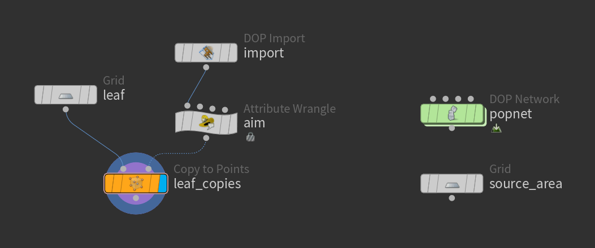
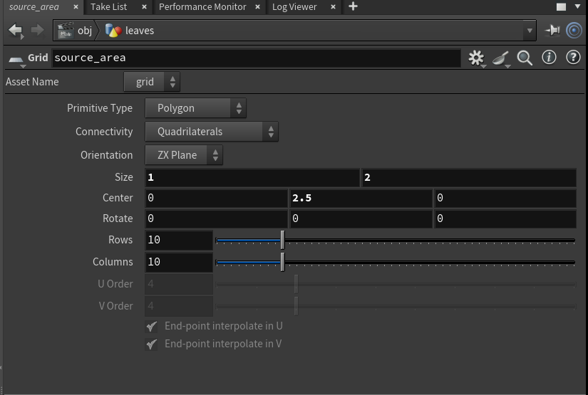
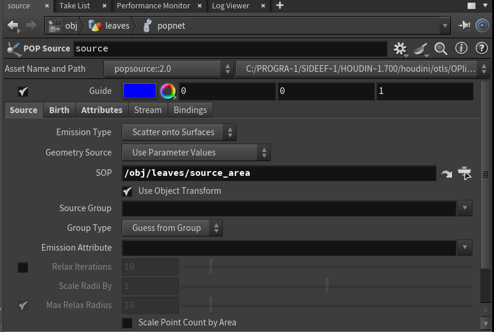
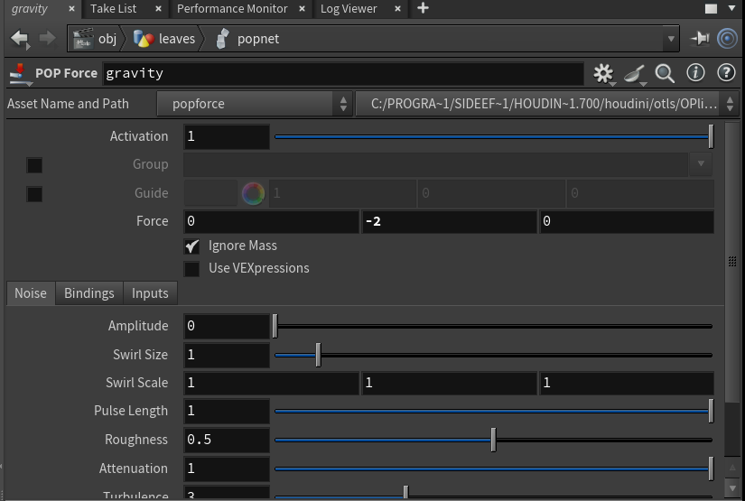
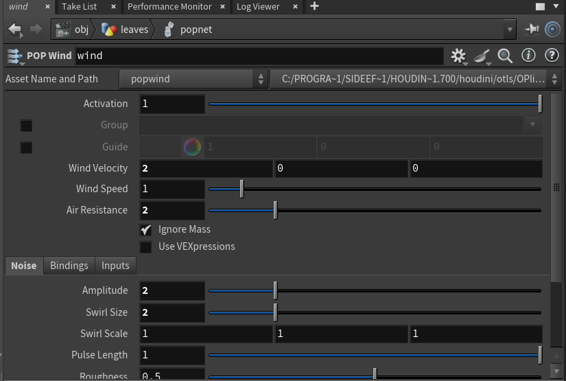
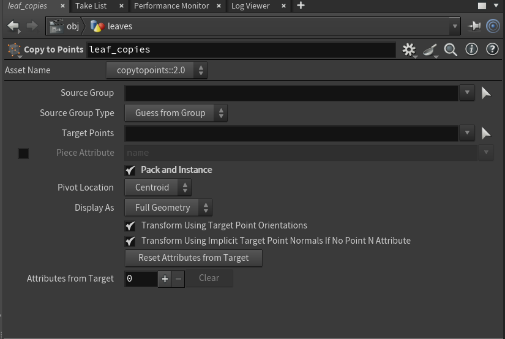

葉を風で舞わせる
5ステップ難易度 応用
落ちてくる粒を横風で流し、風の乱れでばらけさせる。粒に小さな板を配って進む向きに合わせると、葉が舞っているように見える。
- の数
- 10個（うち の中に5個）
- 計算の時間
- 602枚・72フレームで 0.43秒
- 元になった実験
- 実験029・086

-
葉が生まれる場所を置く
grid1 × 2 の
gridを Orientation ZX Plane にして、高さ 2.5 に置く。この面から葉が降ってくる。Houdini の画面

-
粒を生み続ける
popsourcedopnetの中に popobject・popsource・popsolver。popsource は Emission Type を Scatter onto Surfaces、Const. Birth Rate 200、Life Expectancy 8、Variance は 0.2 ほど。Houdini のパラメータ画面

-
弱い重力を足す
popforce葉は軽いので、
popforceは (0, −2, 0) くらいにする。9.81 のままだと、舞う前に落ちてしまう。Houdini のパラメータ画面

-
風と乱れを入れる
popwindpopwindの Wind を (2, 0, 0)、Air Resistance 2。Noise の Amplitude が乱れの強さ、Swirl Size が渦の大きさ。Amplitude 2 で散らばりが 0.76 → 0.85、4 で 1.47 に広がる（実験086）。Houdini のパラメータ画面


Amplitude 0。乱れが無いと、1本の帯になる。 -
葉の板を進む向きに配る
copytopointsdopimportで取り出し、（Run Over は Points）で@N = normalize(v@v); v@up = {0,1,0};。0.12 × 0.07 のgridをcopytopoints（Pack and Instance オン）で配る。Houdini のパラメータ画面

Amplitude 2。
つまずくところ
小さい乱れは、入れても見た目が変わらない
Amplitude 0.5 / 1 の散らばりは 0.7303 / 0.6574 で、乱れ 0 の 0.7621 と変わらない（むしろ小さい）。落ち方のばらつきに埋もれてしまう。変化が欲しいなら 2 以上から（実験086）。
乱れは、速さも上げる
Amplitude 0 → 4 で、粒の速さの平均が 1.882 → 3.588 になった。舞わせるつもりで上げると、思ったより遠くまで飛ぶ。
渦の大きさで「細かい揺れ」と「流れ」が変わる
Swirl Size 0.5 は細かく揺らすだけ（x の平均 2.648）、8 は流れごと運ぶ（3.254）。同じ Amplitude でも見え方が違う。